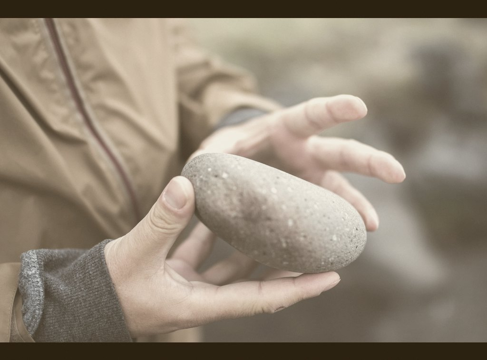

Home / House object
1 Samuel 7:12
Photograph
Public domain
Catalogue no. 001
A Stone
for the Table

Not magic. Not decor. A weight you can actually hold.
Genesis 28:18 / World English Bible
18Jacob rose up early in the morning, and took the stone that he had put under his head, and set it up for a pillar, and poured oil on its top.
01Entry shelf — the thing you pass twice a day.
02Kitchen table — near crumbs, near conversation.
03Desk corner — small enough to move, heavy enough to notice.
04Nightstand — last thing visible before the lights go out.
05Pocket — a place marker that learned how to travel.